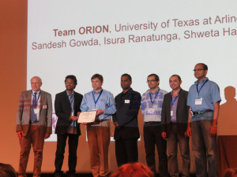

Publication
Multi-modal sensor and HMI integration with applications in personal robotics
Rommel Alonzo, Sven Cremer, Fahad Mirza, Sandesh Gowda, Larry Mastromoro, Dan O. Popa
Awards & Honors
-

- Runner-up Humanitarian Robotics And Automation Technology Challenge at ICRA 2015, Seattle
Sandesh Gowda, Isura Ranatunga, Yathartha Tuladhar, Dan O. Popa Poster -
Won Humanitarian Robotics And Automation Technology Challenge at ICRA 2014, Hong Kong
Isura Ranatunga, Sandesh Gowda, Shwetha Hardas, Dan O. Popa - Accenture -> Health & Public Sector Beacon Award - Dec 2011 and Jun 2011 Star Performance of the Award